Download
This suite of weather icons was designed for the iPhone app Chance of Rain before I narrowed it's focus and concentrated on just precipitation. Therefore many of these icons never made it into the final version. I'm hoping others will make use of them.

Download and use
These are licensed under CC BY 3.0. This means you can use them for free so long as you display a small attribute. "Weather icons by Jamie Reynolds — @jamusreynolds" would be fine - including a link back here would be nicer.
Animate
Following some experimentation with CSS animation I am toying with the idea of adding animated icons to Chance of Rain. If you'd like to have a play around with this idea I'd be happy to add my files to github.